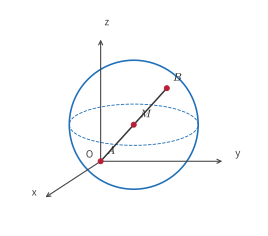
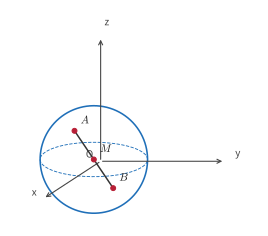
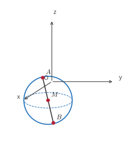

別冊練習問題 8 の解答 2点を直径の両端とする球面
(1) 2点 \(A(0,\ 0,\ 0),\ B(2,\ 4,\ 4)\) を直径の両端とする球面の方程式を求めよ。
中心と半径
\(AB\) の中点が中心。
\[M=\left(\dfrac{0+2}{2},\ \dfrac{0+4}{2},\ \dfrac{0+4}{2}\right)=(1,\ 2,\ 2)\]\[AB^2=2^2+4^2+4^2=36\]\[r^2=\left(\dfrac{AB}{2}\right)^2=\dfrac{36}{4}=9\]
球面の方程式
中心 \(M\)、半径 \(r\) の球面 \((x-a)^2+(y-b)^2+(z-c)^2=r^2\) に代入する。
\[(x-1)^2+(y-2)^2+(z-2)^2=9\]別解
\(\overrightarrow{PA}\cdot\overrightarrow{PB}=0\) を成分で書いても同じ式になる。
【答案】
\[(x-1)^2+(y-2)^2+(z-2)^2=9\]答
(2) 2点 \(A(1,\ -1,\ 2),\ B(5,\ 3,\ 0)\) を直径の両端とする球面の方程式を求めよ。
中心と半径
\(AB\) の中点が中心。
\[M=\left(\dfrac{1+5}{2},\ \dfrac{(-1)+3}{2},\ \dfrac{2}{2}\right)=(3,\ 1,\ 1)\]\[AB^2=4^2+4^2+(-2)^2=36\]\[r^2=\left(\dfrac{AB}{2}\right)^2=\dfrac{36}{4}=9\]
球面の方程式
中心 \(M\)、半径 \(r\) の球面 \((x-a)^2+(y-b)^2+(z-c)^2=r^2\) に代入する。
\[(x-3)^2+(y-1)^2+(z-1)^2=9\]別解
\(\overrightarrow{PA}\cdot\overrightarrow{PB}=0\) を成分で書いても同じ式になる。
【答案】
\[(x-3)^2+(y-1)^2+(z-1)^2=9\]答
(3) 2点 \(A(2,\ 0,\ 1),\ B(4,\ 2,\ -3)\) を直径の両端とする球面の方程式を求めよ。
中心と半径
\(AB\) の中点が中心。
\[M=\left(\dfrac{2+4}{2},\ \dfrac{0+2}{2},\ \dfrac{1+(-3)}{2}\right)=(3,\ 1,\ -1)\]\[AB^2=2^2+2^2+(-4)^2=24\]\[r^2=\left(\dfrac{AB}{2}\right)^2=\dfrac{24}{4}=6\]
球面の方程式
中心 \(M\)、半径 \(r\) の球面 \((x-a)^2+(y-b)^2+(z-c)^2=r^2\) に代入する。
\[(x-3)^2+(y-1)^2+(z+1)^2=6\]別解
\(\overrightarrow{PA}\cdot\overrightarrow{PB}=0\) を成分で書いても同じ式になる。
【答案】
\[(x-3)^2+(y-1)^2+(z+1)^2=6\]答